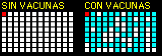

¿Cómo se usa un simulador?
Como un experimento de verdad: antes de mover un control, predice qué pasará. Después compruébalo y cambia una sola cosa a la vez. Un simulador es un modelo: deja fuera mucho de la realidad para que se entienda una idea. Por eso cada uno te dice qué simplifica.
1. Órbitas: el lanzamiento perfecto
Pon un planeta en órbita sin que caiga en la estrella ni se pierda en el espacio. Arrastra sobre el cuadro negro: donde empiezas nace el planeta y la línea indica hacia dónde sale y qué tan rápido. También puedes usar los controles.
Observa: en una órbita alargada, ¿cuándo va más rápido el planeta? Es la segunda ley de Kepler. Calcula: la velocidad para una órbita circular es la raíz de masa / distancia. ¿Qué pasa si la superas por mucho?
Qué simplifica: los planetas no se atraen entre sí y la estrella no se mueve. Las unidades son del simulador, no metros. La Estación Espacial Internacional hace lo mismo a unos 7.7 km/s: da una vuelta a la Tierra cada 90 minutos, cayendo todo el tiempo sin llegar nunca al suelo.
2. Epidemia: ¿qué tanto ayuda una vacuna?
Cada punto es una persona y una está enferma. Quien se le acerca puede contagiarse. Prueba con 0 % de vacunados y luego con 40 %, 70 % y 90 %. Los resultados se anotan solos en la tabla.

| Vacunados | En casa | Pico de enfermos | Enfermaron | De los no vacunados | Días |
|---|
Busca el punto de quiebre: con cierto porcentaje de vacunados, la epidemia casi no despega, aunque muchas personas sigan sin vacuna. Eso se llama inmunidad de grupo. Corre cada caso varias veces: el azar hace que los resultados varíen.
Qué simplifica: aquí la vacuna protege al 100 % y nadie se enferma dos veces. Las vacunas reales reducen mucho el riesgo, pero no siempre lo eliminan. Es un modelo para entender la idea, no para predecir una enfermedad real.
3. Constructor de átomos
Todo lo que ves está hecho de átomos, y solo necesitas tres piezas para armarlos. Prueba qué cambia con cada una.
Retos: arma estos átomos
La regla: los protones deciden qué elemento es. Los neutrones cambian el isótopo, sin cambiar el elemento. Los electrones cambian la carga: si faltan o sobran, el átomo es un ion.
Qué simplifica: los electrones no giran como planetas; las capas son un modelo útil para contarlos. Aquí se llega hasta el calcio, con 20 protones, y el dibujo no está a escala: si el núcleo fuera una canica, el átomo mediría cientos de metros.
4. Tu tiempo de reacción: experimenta contigo
Pulsa el recuadro cuando se ponga verde. Haz series en distintas condiciones y compara. Aquí el dato eres tú.
| Condición | Mediana | Mejor | Peor |
|---|
¿Por qué la mediana? Ordena los tiempos y toma el de en medio. Un intento en el que te distrajiste casi no la mueve, y al promedio sí. Reflexiona: ¿es justo comparar si hiciste más práctica en una condición que en otra?
Qué mide: una respuesta típica a una señal visual tarda unos 250 milisegundos. Las señales de tus nervios más rápidos viajan a más de 100 metros por segundo, así que recorrer tu cuerpo les toma pocos milisegundos: casi todo el resto es tu cerebro decidiendo. Tu pantalla y tu mouse también agregan algunos milisegundos.
5. Sonido: ¿oyes lo que tu profe no oye?
Cuida tus oídos: baja el volumen de tu equipo antes de empezar. Si usas audífonos, déjalos a un volumen bajo. Si algo te molesta, detente.

En el aire, esta onda mide de largo. El dibujo no está a escala.
Prueba de oído
Las personas jóvenes suelen oír hasta cerca de 20,000 Hz, y ese límite baja con la edad. Comenzará en 8,000 Hz e irá subiendo. Compara con tus compañeros y con tu docente.
Pulsa COMENZAR cuando estés en un lugar tranquilo.
Qué limita la prueba: muchas bocinas de computadora no reproducen bien los tonos más agudos, así que el resultado depende también del equipo. Es un juego, no un examen médico.
6. Caída libre en otros mundos
Suelta un objeto desde la misma altura en cuatro mundos. El tiempo de la animación es el real. Predice antes: ¿dónde tarda más en caer?
¿Qué tan alto saltarías?
Sin aire, todo cae igual. En 1971, el astronauta David Scott soltó un martillo y una pluma en la Luna: llegaron juntos al suelo, como predijo Galileo. La gravedad cambia de mundo a mundo; tu masa no.
Qué simplifica: no hay aire ni rotación, y Júpiter en realidad no tiene una superficie sólida donde pararse. Usamos g = 1.62, 3.71, 9.81 y 24.79 m/s².
7. El reloj de la Tierra
La Tierra tiene unos 4,540 millones de años, un número difícil de imaginar. Comprime toda esa historia en un solo día y mueve el control: ¿a qué hora crees que aparecimos nosotros?
00:00:00
México en la historia de la Tierra: el asteroide que marcó el fin de los dinosaurios cayó en lo que hoy es Yucatán. ¿Y en Sonora? En el Pinacate hay cráteres volcánicos tan parecidos a los de la Luna que los astronautas del Apolo entrenaron allí. Investiga cuáles.
Las fechas son aproximadas y la ciencia las sigue afinando.
Convierte un simulador en tu proyecto
Elige una pregunta, predice, haz al menos tres corridas por cada condición y haz una tabla. Eso ya es una investigación. Si lo llevas a una actividad real, trabaja con tu docente y con materiales seguros.
VER PROYECTOS DEL CLUB VER TEMAS STEAM